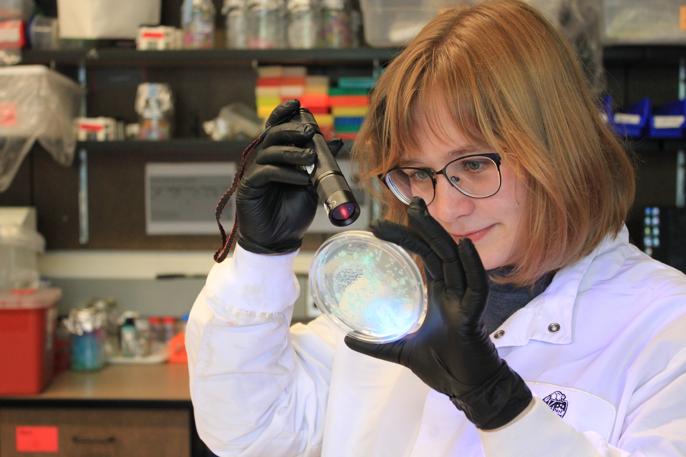
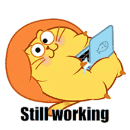

As an environmental engineer, I study electroactive microorganisms that can interact with electricity. Yes, some of them are conductive! How cool are they!

I am a PhD student in the Biological and Ecological Engineering department at Oregon State University, working with marine microbial fuel cells. Specifically, I focus on culturing the bacterial electrogens involved using novel methods. I am hoping to generate isolated cultures to study interactions within defined microbial communities. I graduated with my BS in Microbiology (2023) and a MS in Food Science and Technology (2025) at Oregon State University. I started working in the Food Safety and Quality Laboratory at OSU as an undergraduate student assisting on various projects involving foodborne pathogens and bacterial spoilage organisms. My master's thesis focused on the analysis of Salmonella enterica strains and their antimicrobial resistance plasmids found in Oregon's small scale poultry production system. During this time, I also conducted a project in cooperation with the University of Vermont and North Carolina State University to survey S. enterica and Campylobacter spp. presence in agritourism businesses.

Our team is dedicated to pioneering research in electrobiotechnology. We work on innovative solutions in environmental technology, aiming to address sustainability challenges. Our focus areas include bioenergy, wastewater treatment, and microbial electrochemistry.